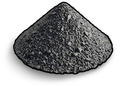

Materiais
Itens · MateriaisPólvora
Gun Powder

Gun Powder / MateriaisReceita de fabricação
Receita de fabricaçãoComo obter
Como obterSaqueObtido como saque
ReciclagemObtido ao reciclar: Carga Explosiva Cronometrada ×100, Foguete ×50, Granada F1 ×15, Explosivos ×7, Granada Improvisada ×7, Cartucho Caseiro ×1, Munição de pistola ×1, Munição 5,56 de espingarda ×1, Cartucho calibre 12 com bagos ×1
Descrição do item
Usado em munições
Notas de fabricação
Obtido por meio de fabricação. Usado para fabricar munição, foguetes e cargas explosivas com temporizador.